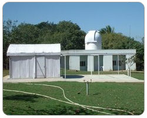

Yelagiri hills, is an idyllic place for a short holiday. Green hills and picture post-card scenery greets you here. It is called the princess of hill stations

and is the most pristine and unpolluted among the hill stations in Tamil Nadu. Yelagiri Hills is a backward area with few glaring developments like cottages and farm houses, yet a place that has maintained its 'remote' label. Its called likely "Mini Ooty"Yelagiri, at a height of 920 meters above sea level, stands majestically amidst four mountains. This is a hill station with a salubrious climate prevailing throughout the year so that winters do not keep visitors away. The main inhabitants of the area are the tribals who live in the 14 small villages which comprise Yelagiri.
These tribals are engaged in agriculture, horticulture, forestry, etc. - all the occupations of rural hill folk. Their customs and habits, and especially the structure of their houses is unique and attracts a number of tourists to this hill station.